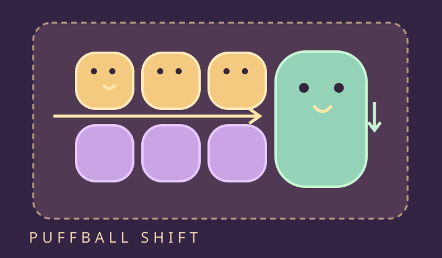

PUFFBALL SHIFT
毛球滑滑樂
整行滑動，讓小毛球找到同色伙伴。

開發試玩版：目前只有第 01、25、50 關。完整 50 關與遊玩節奏仍在製作、驗證中。這是原創非官方致敬作品。
準備探索
手動挑戰
分數0
剩餘機會—
已完成0 / 3
六色都附不同形狀：● ◆ ▲ ✦ ■ ✚。
操作與規則
1. 先選毛球，再用畫面箭頭滑動整行或整列；拖曳也可以。邊緣會循環回另一側。
2. 三隻以上同色毛球只要上下左右相連就能消除，L 型也可以。
3. 四格縫線大毛球算一隻，牽連的兩行或兩列會一起滑動。大球不會被重力拆開。
4. 結鎖封住整條行列，只有旁邊一群消除或星光擊中才減一層。一般毛球在大球與結鎖之間下落。
5. 五隻以上的群留下 ★ 星毛球；再次把它組群會清掉十字行列。洗牌只重排未鎖小球，不能解鎖。
鍵盤：方向鍵移游標，Enter 選格；W/A/S/D 滑動選中行列。
設定、紀錄與備份
提示紀錄與手動過關分開。關卡可自由選擇，沒有等待解鎖。